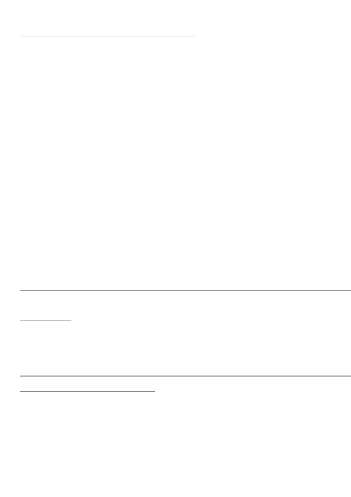

Onderwerp 2 (WEKE 1 – 5)Gesondheids, sosiale en omgewingsverantwoordelikheidEenheid 1 Konsep: Vrywillige diensIndividuele en samelewingsverantwoordelikheidAkt. 1: Diensbaarheid Akt. 2: Waar kan ek diens verrig?Eenheid 2 Konsep: Vrywillige diensSoorte vrywillige organisasiesAkt. 1: Soorte vrywillige organisasiesEenheid 3 Konsep: Vrywillige diensSoorte vrywillige aktiwiteiteAkt. 1: SeesterAkt. 2: Wat doen my skool?Akt. 3: Hoe kan ons betrokke raak by …Eenheid 4 Gesondheids en veiligheidskwessies wat verwant is aan geweldAlgemene dade van geweldAkt. 1: Staan op teen geweld!Eenheid 5 Gesondheids en veiligheidskwessies wat verwant is aan geweldImpak van geweld op individuele en samelewingsgesondheid en veiligheidAkt. 1: Verkeerd, verkeerd, verkeerd!Eenheid 6 Gesondheids en veiligheidskwessies wat verwant is aan geweldAlternatiewe oplossings vir geweldAkt. 1: RolspelAkt. 2: Dink anders oor konflikEenheid 7 Gesondheids en veiligheidskwessies wat verwant is aan geweldBeskerming van jouself en ander teen gewelddadige optredesGeen aktiwiteite
KWARTAAL 4 Onderwerp 4 (WEKE 1 – 5)Wêreld van werkEenheid 8 Plan vir eie lewenslange leer: doelwitstelling vir lewenslange leerAkt. 1: Wat baat lewenslange leer my? Eenheid 9 Verskaffers van studie en loopbaanbefondsingAkt. 1: Etiese kodeAkt. 2: Wat kan ons doen?Onderwerp 3 (WEKE 1 – 5)Grondwetlike regte en verantwoordelikhedeEenheid 6 Bydraes van verskillende religieë tot die bevordering van vredeAkt. 1: Kom ons praat vrede Eenheid 7 Grondwetlike regte en verantwoordelikhedeSportetiek in alle fisiese aktiwiteiteGeen aktiwiteite